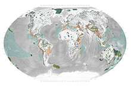
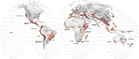
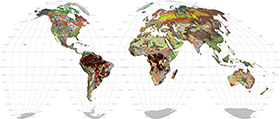
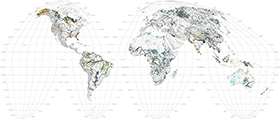
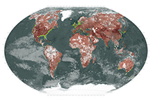
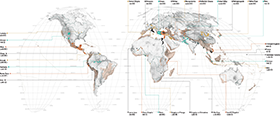
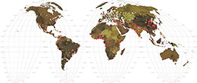
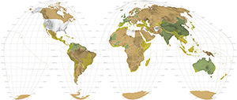

Seismic Activity
Atmospheric Currents

Biomes

Anthromes

Remnant Vegetation

Threatened Mammals

Protected Areas

Biological Hotspots

Hotspots + - 17%
Eco-Regions + - 17%

Soils

Croplands

Meat Map

Land Degradation

Tropics

Deforestation

Rivers and Water Basins

Health of Waters

Access to Water

Evolution of Urbanization

Planetary Urbanization

Megaregions
Megastructures

Megaearthworks

Human Movement
Population Pressure

World Health

Energy

Nuclear Energy
Climate Change

Sea Level Rise

Environmental Displacement
Conflict and Corruption

Conflict and Displacement
Biodiversity Planning

Conservation Spending

Corporations

Environmental Performance (Yale)
Landscape Intelligence

Ecotourism

Zoos and Botanic Gardens

Religion

Paradise and Utopia